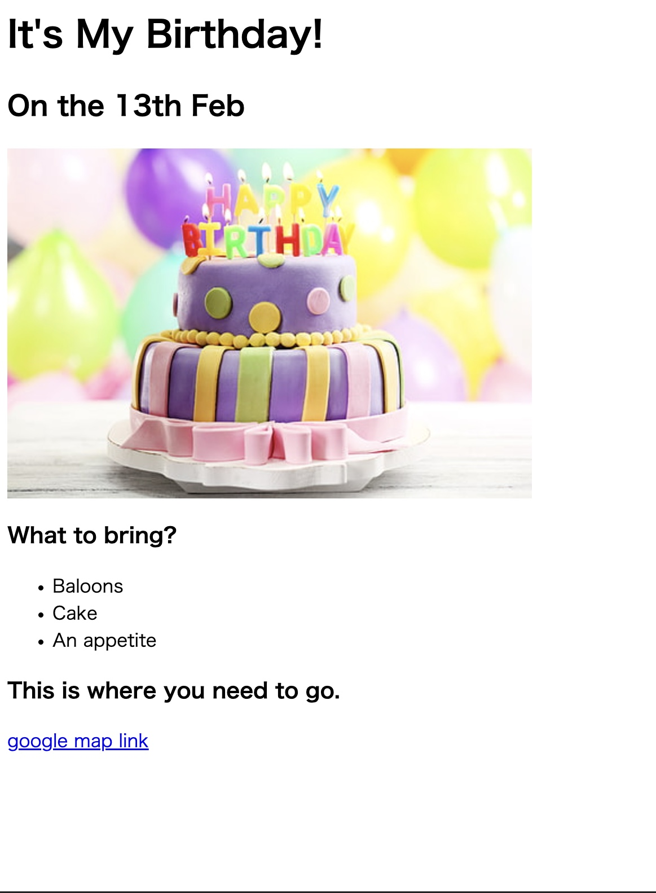

Tomonori Hata's Portfolio
I'm a Web developer
Movie Ranking Project
The Best Movies According to Tomonori
My Top 3 movies of all-time
Rapin Third Castle of Caliostro
My most favorite Animation movie.
Stand By Me
this movie reminds me my yourth age.
Planet of love
The best movie of my favorite actor Tony Leung.
Birthday Invite Project

About Me
Contact Me